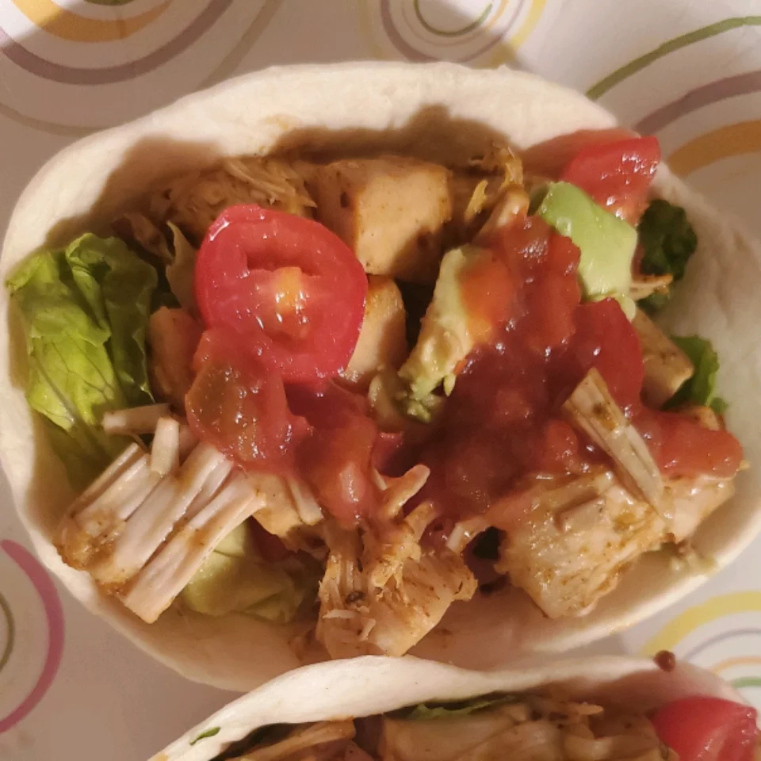

Chef John's Shakshuka

This North African one-dish-meal is so fast, easy, and delicious. Be sure to cook your sauce until the veggies
are nice and soft and sweet. Once the eggs go in, you can finish covered on the stove, or just pop the pan into
a hot oven until they cook to your liking.
Ingredients
- 2 tablespoons olive oil
- 1 large onion, diced
- 1/2 cup sliced mushrooms
- 1 tablespoon salt
- 1 cup diced red bell pepper
- 1 jalapeno pepper, seeded and sliced
- 1 teaspoon cumin
- 1/2 teaspoon paprika
- 1/2 teaspoon ground tumeric
- 1/2 teaspoon freshly ground black pepper
- 1/4 teaspoon cayenne pepper
- 28oz can of crushhed San Marzano tomatoes
- 1/2 cup of water
- 6 large eggs
- 2 tablespoons crumbled feta cheese
- 2 tablespoons chopped fresh parsley